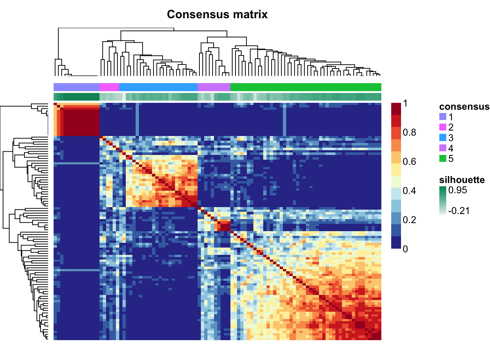
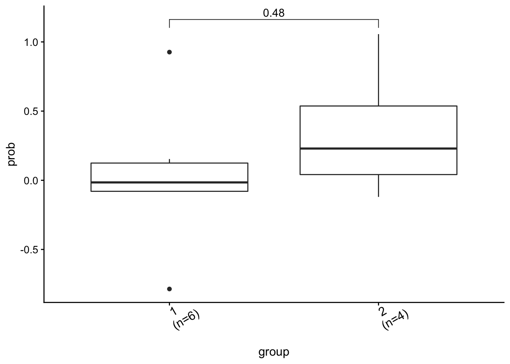
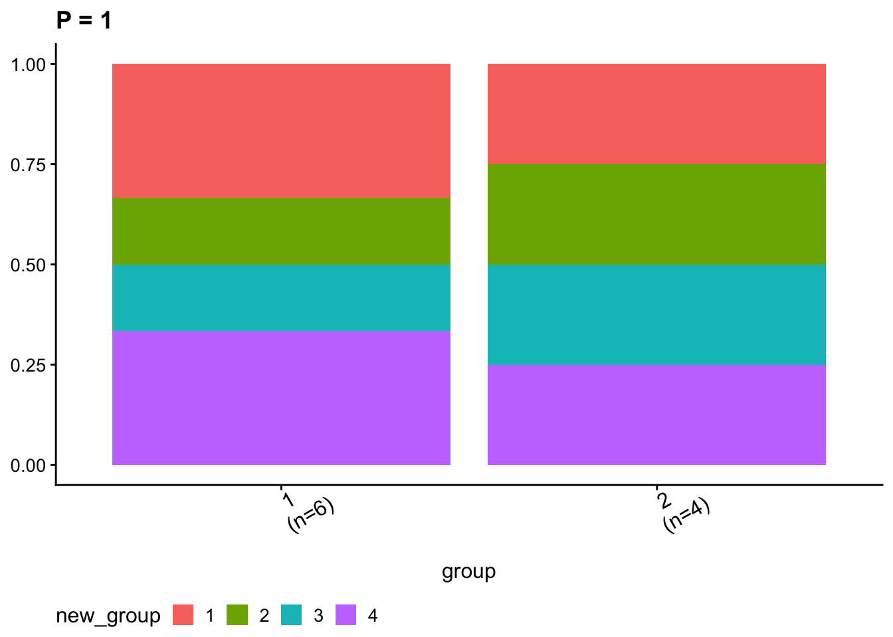

Chapter 10 Group Analysis and Visualization
Group analysis is a common task in cancer study. Sigminer supports dividing samples into multiple groups and comparing genotype/phenotype feature measures.
10.1 Group Generation
There are multiple methods to generate groups, including ‘consensus’ (default, can be only used by result from sig_extract()), ‘k-means’ etc. After determining groups, sigminer will assign each group to a signature with maximum fraction. We may say a group is Sig_x enriched.
mt_grps <- get_groups(mt_sig, method = "consensus", match_consensus = TRUE)
#> ℹ [2021-05-18 23:17:31]: Started.
#> ✓ [2021-05-18 23:17:31]: 'Signature' object detected.
#> ℹ [2021-05-18 23:17:31]: Obtaining clusters from the hierarchical clustering of the consensus matrix...
#> ℹ [2021-05-18 23:17:31]: Finding the dominant signature of each group...
#> => Generating a table of group and dominant signature:
#>
#> Sig1 Sig2 Sig3 Sig4 Sig5
#> 1 14 0 0 0 0
#> 2 0 2 4 0 0
#> 3 1 0 8 15 0
#> 4 0 2 0 0 8
#> 5 0 42 3 1 0
#> => Assigning a group to a signature with the maxium fraction (stored in 'map_table' attr)...
#> ℹ [2021-05-18 23:17:31]: Summarizing...
#> group #1: 14 samples with Sig1 enriched.
#> group #2: 6 samples with Sig3 enriched.
#> group #3: 24 samples with Sig4 enriched.
#> group #4: 10 samples with Sig5 enriched.
#> group #5: 46 samples with Sig2 enriched.
#> ! [2021-05-18 23:17:31]: The 'enrich_sig' column is set to dominant signature in one group, please check and make it consistent with biological meaning (correct it by hand if necessary).
#> ℹ [2021-05-18 23:17:31]: 0.079 secs elapsed.
head(mt_grps)
#> sample group silhouette_width enrich_sig
#> 1: TCGA-PE-A5DD-01A-12D-A27P-09 1 0.572 Sig1
#> 2: TCGA-D8-A1JJ-01A-31D-A14K-09 1 0.279 Sig1
#> 3: TCGA-BH-A18K-01A-11D-A12B-09 1 0.125 Sig1
#> 4: TCGA-AC-A2FO-01A-11D-A17W-09 1 0.259 Sig1
#> 5: TCGA-E2-A1IH-01A-11D-A188-09 1 0.535 Sig1
#> 6: TCGA-E2-A152-01A-11D-A12B-09 1 0.482 Sig1The returned sample orders match sample orders in clustered consensus matrix.
show_sig_consensusmap(mt_sig)
Sometimes, the mapping between groups and enriched signatures may not right. Users should check it and even correct it manually.
attr(mt_grps, "map_table")
#>
#> Sig1 Sig2 Sig3 Sig4 Sig5
#> 1 14 0 0 0 0
#> 2 0 2 4 0 0
#> 3 1 0 8 15 0
#> 4 0 2 0 0 8
#> 5 0 42 3 1 010.2 Group Comparison Analysis
load(system.file("extdata", "toy_copynumber_signature_by_M.RData",
package = "sigminer", mustWork = TRUE
))
# Assign samples to clusters
groups <- get_groups(sig, method = "k-means")
#> ℹ [2021-05-18 23:17:32]: Started.
#> ✓ [2021-05-18 23:17:32]: 'Signature' object detected.
#> ℹ [2021-05-18 23:17:32]: Running k-means with 2 clusters...
#> ℹ [2021-05-18 23:17:32]: Generating a table of group and signature contribution (stored in 'map_table' attr):
#> Sig1 Sig2
#> 1 0.003428449 0.9965052
#> 2 0.031799383 0.9682006
#> ℹ [2021-05-18 23:17:32]: Assigning a group to a signature with the maximum fraction...
#> ℹ [2021-05-18 23:17:32]: Summarizing...
#> group #1: 6 samples with Sig2 enriched.
#> group #2: 4 samples with Sig2 enriched.
#> ! [2021-05-18 23:17:32]: The 'enrich_sig' column is set to dominant signature in one group, please check and make it consistent with biological meaning (correct it by hand if necessary).
#> ℹ [2021-05-18 23:17:32]: 0.023 secs elapsed.
set.seed(1234)
groups$prob <- rnorm(10)
groups$new_group <- sample(c("1", "2", "3", "4", NA), size = nrow(groups), replace = TRUE)
# Compare groups (filter NAs for categorical coloumns)
groups.cmp <- get_group_comparison(groups[, -1],
col_group = "group",
cols_to_compare = c("prob", "new_group"),
type = c("co", "ca"), verbose = TRUE
)
#> Treat prob as continuous variable.
#> Treat new_group as categorical variable.
# Compare groups (Set NAs of categorical columns to 'Rest')
groups.cmp2 <- get_group_comparison(groups[, -1],
col_group = "group",
cols_to_compare = c("prob", "new_group"),
type = c("co", "ca"), NAs = "Rest", verbose = TRUE
)
#> Treat prob as continuous variable.
#> Treat new_group as categorical variable.10.3 Group Visualization
ggcomp <- show_group_comparison(groups.cmp2)
ggcomp$co_comb
ggcomp$ca_comb